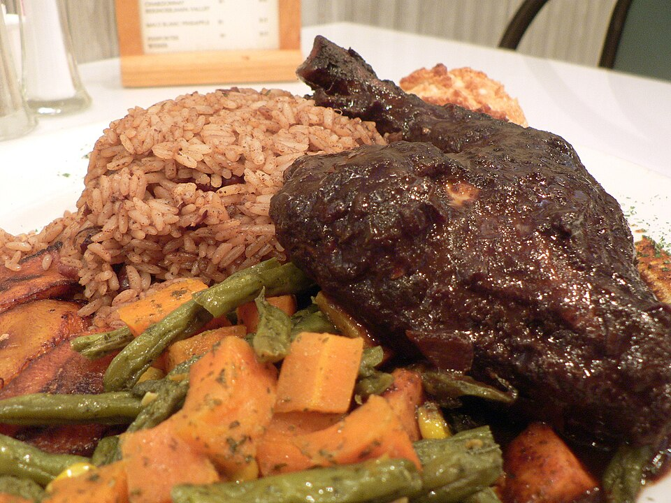

Slow-Braised Oxtail Stew
Selected beef oxtails seasoned in Jamaican browning, garlic, and fresh thyme, simmered for hours until gelatinous and tender with creamy butter beans in rich brown gravy.
Explore Oxtail Tradition →Welcome to Tropical Goodies, West Charlotte’s landmark destination for authentic Jamaican recipes and comforting Southern soul food. From smoky scotch bonnet jerk chicken and fall-off-the-bone braised oxtails with butter beans to golden curry goat, rasta pasta, and sweet plantains, we serve genuine Caribbean hospitality with every plate.

Fresh pimento allspice, scotch bonnet peppers, slow simmering, and generous plates.
Selected beef oxtails seasoned in Jamaican browning, garlic, and fresh thyme, simmered for hours until gelatinous and tender with creamy butter beans in rich brown gravy.
Explore Oxtail Tradition →Bone-in chicken marinated in freshly ground allspice berries, fiery scotch bonnet peppers, scallions, and island citrus, grilled slow over open flame for a smoky charred crust.
Discover Jerk Specialties →Pair your entree with sweet caramelized ripe plantains, coconut milk rice and red peas, Southern baked four-cheese mac & cheese, spiced candied yams, and steamed cabbage.
View Soul Food Sides →Serving lunch and dinner seven days a week on Lasalle Street. Walk-ins, dine-in counter seating, and fast carryout orders welcomed.
Hours, Directions & Takeout Directives →